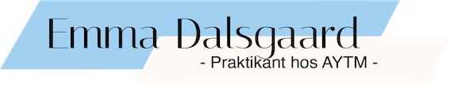
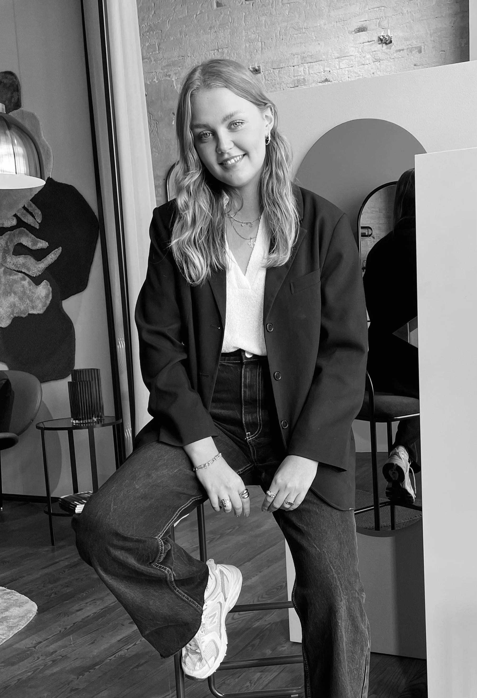

Emma er 22 år gammel. Hun flyttede i sommeren 2020 til Aarhus fra Holstebro, for at læse multimediedesign på Aarhus Erhvervsakademi. I hendes fritid elsker hun at bruge tid med sin familie og sine veninder. Lige nu er hun i praktik hos en interiør virksomhed - AYTM. Her har hun ansvaret for SOME og kontakten til AYTMs samarbejdspartner.